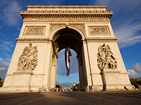
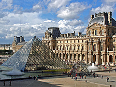
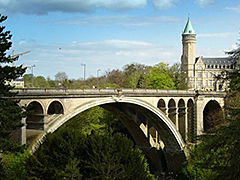

Join tour di Avenue des Champs Elysees, meeting Point di La Brioche Dorée Restaurant alamat 144 Avenue des Champs Elysees, 75008 Paris (nearby Arc de Triomphe), Metro: Line 1 Stop: George V, exit Avenues Des Champs Elysees, pukul 10.00 pagi (mohon berada di meeting point 15 -30 menit sebelumnya). Anda akan berada di Paris selama dua hari ke depan saat Anda menikmati tour berpemandu di sekitar salah satu kota paling terkenal di dunia. Petualangan Paris Anda dimulai dengan awal yang spektakuler dengan perjalanan di sepanjang ChampsÉlysées yang terkenal sampai Place de la Concorde, yang memainkan peran kunci dalam Revolusi Prancis. Anda juga akan melihat Arc de Triomphe yang ikonik di sini, monumen megah yang berada di dekat ujung barat jalan dan memperingati jatuhnya revolusi dan perang Napoleon. Anda akan melihat bangunan bersejarah penting lainnya saat Anda menuju L`Hôtel National des Invalides, di mana terletak Makam Napoleon, dan berhenti di Menara Eiffel. Anda dapat meluangkan waktu untuk menjelajahi lingkungan dan makan siang atau eksplorasi Menara Eiffel (biaya dan pengaturan sendiri). Pilihan adalah milik Anda. Akhirnya, Anda akan melakukan perjalanan dengan bus melalui pinggiran kota Paris ke Istana Versailles yang indah. Di malam hari, Anda dapat menikmati salah satu acara malam di Paris (biaya tambahan). Hotel: 3 * di Paris atau kota di dekatnya.
Wisata di Paris Anda dimulai dengan kunjungan ke Louvre, salah satu museum seni terbesar di dunia. Tour tambahan masuk ke Museum Louvre tersedia (biaya tambahan). Anda kemudian dapat mengambil pelayaran santai di sepanjang sungai Seine (biaya tambahan), pilihan wisata yang bagus yang menawarkan pemandangan indah landmark ikonis Paris, termasuk Katedral Notre-Dame dan Pont Alexandre III. Makan siang (biaya sendiri) sebelum menuju ke area di sekitar Palais Garnier, gedung opera Paris. Setelah itu, Anda memiliki pilihan untuk menikmati France 4 course Dinner (biaya tambahan) atau menghabiskan waktu berbelanja di department store legendaris di Galeries Lafayette. Hotel: 3 * di Paris atau kota di dekatnya.
Pagi ini Tour berangkat dari Paris untuk perjalanan yang menyenangkan melalui pedesaan daerah Champagne, untuk sparkling white wine terkenal di dunia yang diproduksi di sini. Nikmati melihat atraksi bersejarah ibukota provinsi Reims, termasuk City`s Cathedral yang merupakan situs warisan nasional utama, di mana penobatan raja Prancis berlangsung dari abad ke-11 dan seterusnya. Sejarah dan tradisi sama-sama terbukti di lokasi Anda berikutnya: Luksemburg, satu-satunya di dunia tersisa Grand Duchy. Setelah tiba di Kota Luksemburg yang bagus, Anda akan diperkenalkan dengan berjalan kaki ke tempat-tempat utama yang menarik, termasuk Place de Constitution dan Pont Adolphe, sebelum memiliki waktu untuk eksplorasi lebih lanjut sendiri. Tour berakhir.